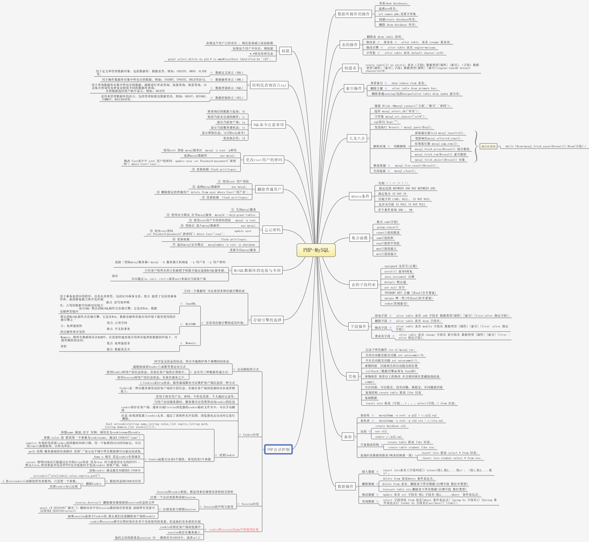

MYSQL的学习
浓缩版

COOKIE_SESSION PHP会话控制
1. 为什么使用会话技术
“HTTP协议”是无状态协议： HTTP协议不能告诉我们多请求是否是来自同一个人
会话控制：会话控制的思想就是允许服务器跟踪同一个客户端做出的连续请求
2. 会话跟踪的方式
HTTP是无状态的协议，所以不能维护两个事物间的状态。
但一个用户在请求一个页面以后再请求另一个页面时，需要让服务期知道这是一个用户。
总共有3种数据传递方式：
超链接或者header()函数等重定向方式
使用Cookie将用户的信息状态，存放在客户端的计算机中。
使用Session将用户的信息状态，存放在服务器之中。
3. Cookie应用
3.1 Cookie概述
① cookie是在http协议下，服务器或脚本可以维护客户端信息的一种方式。
② Cookie是一种由服务器发送给客户端的片段信息，存储在客户端浏览器的内存或者硬盘上。
③ 常用于保存用户名，密码，个性化设置，个人偏好记录等。
④ 当用户访问服务器时，服务器可以设置和访问cookie的信息。
⑤ cookie保存在客户端，通常是IE或Firefox浏览器的cookie临时文件夹中，可以手动删除。
⑥ 注意：如果浏览器上cookie太多，超过了系统所允许范围，浏览器也会自动对它进行删除。
3.2 设置Cookie
bool setcookie(string name,[string value,[int expire,[string path,[string domain,[int secure]]]]]);
本cookie函数可以有6个属性，常用的有3个参数。
参数 描述 示例
name 名字 调用名为cookiename的cookie
value 值 假设第一个参为cookiename,通过$_COOKIE[‘name’取得值]
exprice 有效时间 设置cookie的过期时间和日期，用一个标准的Unix时间标记，可以用time()函数取得，以秒为单位.
path 范围 服务器端的有效路径，设置为“/”表示这个域中所有数组都可以被访问读取。
doma n 域名 设定cookie有效域名
secure 指明cookie只能通过安全的https传送设为true时只能使用安全的https，默认为false，即设置是否仅在https安全连接时才发送cookie到客户端，0或1。
3.3 读取Cookie
通过超全局数组 $_COOKIE
3.4 数组形态的Cookie应用
setcookie("info[index]", value, expries, path)
3.5 删除Cookie
① 省略setcookie()函数的所有参数列 只设置一个参数
② 设置cookie为已过期
3.6 基于Cookie的用户登录模块
4. Session应用
4.1 Session概述
4.1.1 Session和Cookie相似，都是用来储存使用者的相关资料。
4.1.2 cookie和session在php中的使用区别:
① cookie和session都可以暂时保存在多个页面中使用的变量，但是它们有本质的差别。
② cookie存放在客户端浏览器中，
③ session保存在服务器上。
④ 它们之间的联系是session ID 一般保存在cookie中，或者放在URL上。
4.1.3 禁用cookie的方法：
点击IE中的“工具”—“Internet选项”，在弹出的对话框里点击“安全”—“自定义级别”项，将“允许每个对话COOKIE”设为禁用.
4.2 配置Session
session.auto_start = 0 ; 在请求启动时初始化session
session.cache_expire = 180 ; 设置缓存中的会话文档在 n 分钟后过时
session.cookie_lifetime = 0 ; 设置按秒记的cookie的保存时间， 相当于设置Session的过期时间，为0时表示直到浏览器被重启
session.auto_start=1， 这样就无需每次使用session之前都要调用session_start()。但启用该选项也有一些限制，如果确实启用了 session.auto_start，则不能将对象放入会话中，因为类定义必须在启动会话之前加载以在会话中重建对象。
session.cookie_path = / ; cookie的有效路径
session.cookie_domain = ; cookie的有效域
session.name = PHPSESSID； 用在cookie里的session的名字
session.save_handler = files ; 用于保存/取回数据的控制方式
session.save_path = /tmp ; 在 save_handler 设为文件时传给控制器的参数， 这是数据文件将保存的路径.
session.use_cookies = 1 ; 是否使用cookies
4.3 Session的声明与使用
session_start()
4.4 注册一个会话变量和读取Session
4.5 注销变量与销毁Session
1.session_destroy() 删除服务器端保留session信息的文件
2.unset($_SESSION[‘键名’]) 删除内存中由Session数组保存的变量 清除所有变量可以使用 $_SESSION=array()
3.如果session是基于Cookie的，那么我们还需要删除客户端保留的cookie文件
4.6 Session的自动回收机制
session.cookie_lifetime=0; 关 闭浏览器相应的cookie文件即被删除
session.gc_maxlifetime; 设置过期session时间，默认1440秒（24分钟）
session.gc_probability/session.gc_divisor; 启动垃圾回收机制的概率（建议值为1/1000～5000）
4.7 传递Session ID
1.通过Cookie传递Session ID
2.通过URL 传递Session ID
c1ntkpotvobalgq2l3c7rpjel5